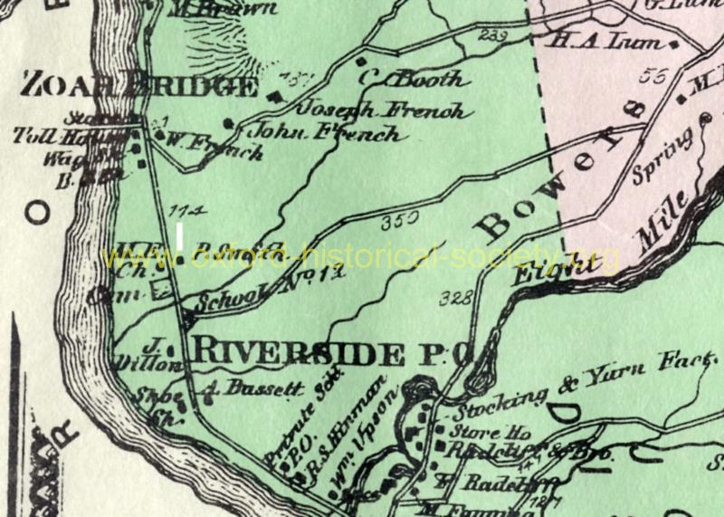

 MAP_Josiah-Smith-house_1868_Beers_2012-PF.jpg
1868 Map shows Riverside area. The Methoeist Episcopal Church, the Cemetery and both the Public Schoolhouse and the Private Schhool, were flooded by Lake Zoar., The new lake extended northerly beyond the Zoar Bridge in the map.
Previous
Thumbnails
Next